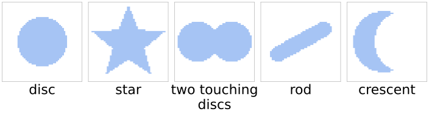
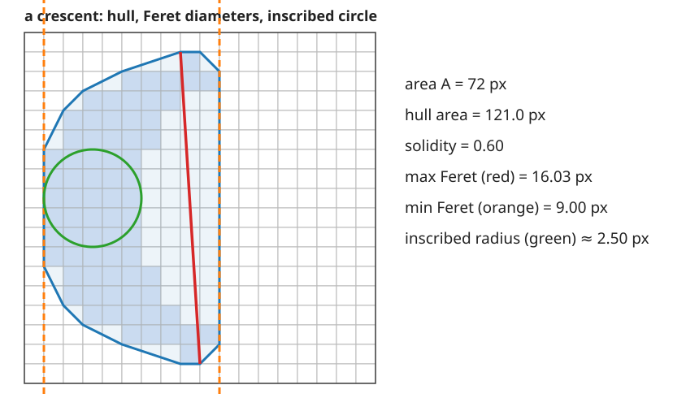
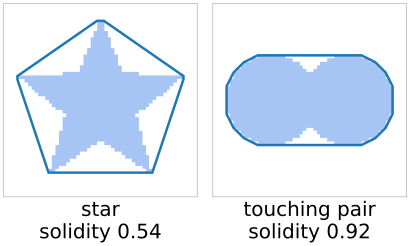
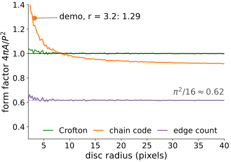
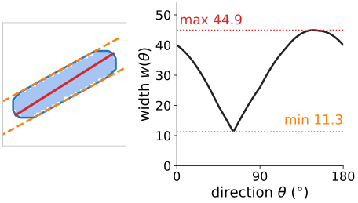
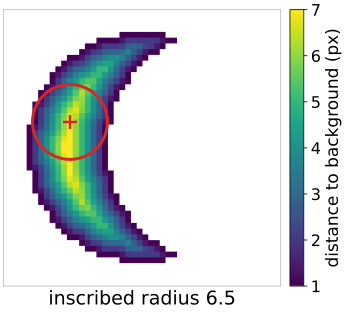
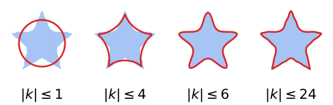

A disc and a five-pointed star of the same area have the same area, and both have equal eigenvalues. Moments summarise the spread of the pixels; this unit measures the outline.
Convex hull and solidity: how much is missing from a convex shape (and “should these two touching nuclei be split?”).
Form factor4\pi A/P^2, and why it inherits the perimeter bias of the last unit.
Feret diameters: the width in every direction, found with rotating calipers.
Radii from the distance transform, Fourier descriptors of the contour.
Digitised on a 64 × 64 grid (numbers from the demo):

area
solidity
form factor
max / min Feret
inscribed radius
disc, r = 16
812
0.96
1.02
33.3 / 32.0
15.0
star (same area)
804
0.54
0.33
48.0 / 44.0
10.3
two touching discs
1040
0.92
0.76
48.7 / 26.0
12.0
rod
420
0.90
0.52
44.9 / 11.3
4.9
crescent
548
0.61
0.46
40.8 / 26.0
6.5
(Form factor with the Crofton perimeter.) Each column separates some shapes and not others: a feature table needs several.
Size: what we already have
Area A, perimeter P (edge count is 4/\pi too long; use chain code or Crofton), bounding box and extent, axis lengths 4\sqrt{\lambda_{1,2}}, eccentricity: last unit.
Equivalent diameter: the diameter of the disc with the same area, d = \sqrt{4A/\pi}.
In 3D the same name means the sphere with the same volume, d = \sqrt[3]{6V/\pi}. Same name, different formula: always say which.
Every size feature is in pixels until it is multiplied by the pixel size (lengths) or its square (areas).
The convex hull

The convex hull is the smallest convex set that contains the object: a rubber band around it.
For pixels, take the hull of the pixel corners (blue). The hull of the pixel centres is half a pixel smaller all round: for a one-pixel-wide line it has area 0. The choice matters a lot for small objects.
Only the leftmost and rightmost pixel of each row can be on the hull: few candidates.
Algorithm (Andrew’s monotone chain): sort the points by x; walk left to right keeping only right turns (upper hull), then right to left (lower hull). O(n\log n).
Area of the hull polygon: the shoelace formula.
The math: the shoelace formula
For a polygon with vertices (x_1, y_1), \dots, (x_k, y_k) in order (and x_{k+1} = x_1):
A = \frac12 \sum_{i=1}^{k} \big(x_i y_{i+1} - x_{i+1} y_i\big).
Each term is twice the signed area of the triangle (origin, vertex i, vertex i+1); triangles outside the polygon cancel. The sign tells the orientation of the vertices.
It is Green’s theorem, A = \frac12\oint (x\,dy - y\,dx), applied to straight edges. The same theorem turns the moments \iint x^p y^q into sums over the edges of a polygon (moments day; marching-cubes day for surfaces).
Solidity= A / A_{\text{hull}}: 1 for a convex object, lower the more is missing.
Disc 0.96, rod 0.90 (on pixels, convex shapes get a little less than 1: the staircase of the outline is not convex), star 0.54, crescent 0.61.
Two touching nuclei: 0.92 against 0.96 for one nucleus. A low solidity for an object of nucleus size says “two objects merged here, consider splitting” (watershed day).
Exact solidity from the outline: disc 1.00, star 0.52, crescent 0.61, touching pair 0.93.
With the centre convention, small objects can get solidity above 1 (pixel area larger than the hull of the centres).

Hull of the pixel corners in blue.
Form factor and its bias
Form factor (circularity) 4\pi A/P^2: 1 for a disc, smaller for everything else (isoperimetric inequality).
It inherits the perimeter bias: with the edge count a digital disc gets (\pi/4)^2 = \pi^2/16 \approx 0.62, at every resolution.
With a better perimeter it is close to 1 for large discs, but small discs come out above 1: a disc of radius 3.2 pixels gets 1.29 with the chain code (the polygon through the centres is too short).
Rule: compare form factors only within one estimator and one resolution, and not for objects of a few pixels.
Compactness is a name with several meanings:
disc
square
2:1 rectangle
P^2/(4\pi A)
1
1.27
1.43
2\pi\,\overline{r^2}/A (second moments)
1
1.05
1.31
(and in 3D S^3/(36\pi V^2), 1 for a sphere).

Digital discs, mean over 16 sub-pixel positions of the centre.
Feret diameters
The Feret diameter (caliper diameter) w(\theta): the distance between two parallel lines that touch the object, measured in direction \theta.
Max Feret = the largest distance between two points of the object (red).
Min Feret = the smallest width (orange calipers): what a sieve measures.
Both are attained on the convex hull, so only hull vertices matter.
Rotating calipers: turn the pair of lines around the hull; the opposite vertex moves forward as the edge advances: O(h) for h hull vertices. The min width always has one caliper flush with a hull edge.

The demo’s rod: hull (blue), max Feret (red), min-width calipers (orange), and the width in every direction.
The math: rotating calipers
w(\theta) = \max_p \mathbf p\cdot\mathbf u_\theta - \min_p \mathbf p\cdot\mathbf u_\theta with \mathbf u_\theta = (\cos\theta, \sin\theta) and \mathbf p the hull vertices.
Between two angles at which the extreme vertices change, w(\theta) = |(\mathbf p_a - \mathbf p_b)\cdot\mathbf u_\theta| = c\,|\cos(\theta - \varphi)|: a concave function of \theta. Its minimum over an interval is at an end, where a caliper becomes flush with an edge. So the min width = \min over hull edges of the largest distance of a vertex from that edge’s line.
The max of each piece is |\mathbf p_a - \mathbf p_b|: the diameter is the largest distance over antipodal pairs.
Walking the edges in order, the farthest vertex only moves forward: O(h) in total (Toussaint, 1983).
Radii from the distance transform
The distance transform (morphology day): \mathrm{DT}(p) = distance from object pixel p to the nearest background pixel.
Maximum inscribed radius\approx \max \mathrm{DT} - \tfrac12 (DT is measured between pixel centres): the largest disc that fits inside. A thickness that ignores protrusions.
Mean radius: the mean of DT over the object.
A rod of width w has inscribed radius \approx w/2 whatever its length; its min Feret is \approx w too. A crescent has min Feret 26 but inscribed radius only 6.5: it is thin but curved.
The centre of the largest disc lies on the medial axis (skeleton day). Also used: the minimum enclosing circle (Welzl’s algorithm).

The crescent: DT and the largest inscribed disc.
Try it: shape features
Contour descriptors
Walk the boundary and write each point as a complex number z(t) = x(t) + i\,y(t): a periodic signal. Its Fourier coefficients c_k (recall the Fourier unit) describe the outline:

The demo’s “k Fourier coefficients” star (blue) and its outline rebuilt from the coefficients with |k| \le K (red), 128 boundary points.
c_0 is the centroid of the contour; drop it for translation invariance.
c_{\pm1} is the best-fitting ellipse; divide by |c_1| for scale invariance; use magnitudes |c_k| for rotation and starting-point invariance.
Keep only |k| \le K and transform back: a smoothed outline. A 5-pointed star needs |k| up to about 4–6 to show its points (an exactly 5-fold symmetric outline has only |k| = 1, 4, 6, 9, 11, \dots).
Low k: overall shape; high k: detail and pixel noise.
Pitfalls
Units: areas scale with the square of the pixel size, lengths linearly, ratios (solidity, form factor) not at all. Report µm and µm².
Anisotropic pixels (e.g. a stack with \Delta z = 3\Delta x, or a scanner with non-square pixels): compute in physical coordinates, or resample to square pixels first. In pixel units a sphere looks like an ellipsoid.
Border objects are truncated: their area, Feret and form factor are wrong. Drop them, or count with a frame (next unit).
Resolution: an object of 10 pixels has no meaningful form factor or Feret ratio.
Segmentation error: one pixel of dilation adds about P pixels of area, a relative change P/A = 2/r for a disc: 9 % for r = 22, about 20 % for a rod of width 10.
Summary
Equivalent diameter\sqrt{4A/\pi} (2D) or \sqrt[3]{6V/\pi} (3D).
Convex hull of the pixel corners; area by the shoelace formula; solidityA/A_{\text{hull}} flags concave and merged objects.
Form factor4\pi A/P^2: depends on the perimeter estimator (0.62 for a disc with the edge count); can exceed 1 for small objects.
Feret diameters: max = diameter, min = width; rotating calipers on the hull in O(h).
Inscribed radius from the distance transform: thickness.
Fourier descriptors: outline as a periodic signal.